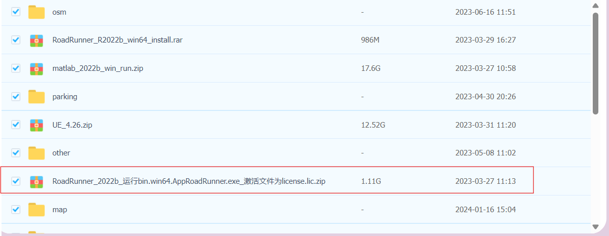
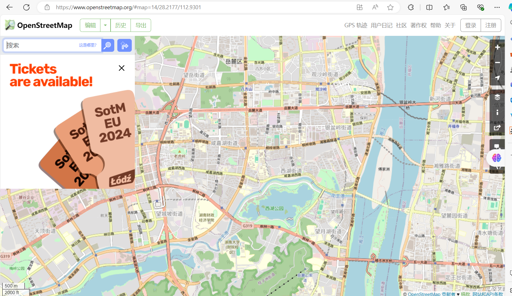
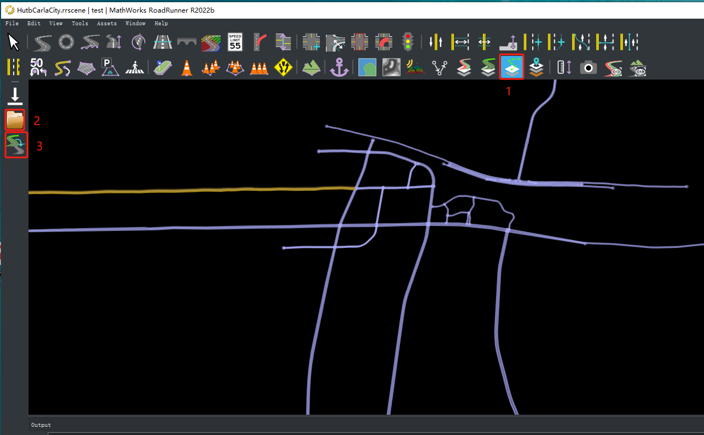

RoadRunner进行道路场景建模
RoadRunner 是一款交互式编辑器，可以设计用于模拟和测试自动驾驶系统的 3D 场景，以及创建要导入 Carla 的大地图。
RoadRunner简介
RoadRunner是一个交互式编辑器，可以让您设计3D场景来模拟和测试自动驾驶系统。它可以用来创建道路布局和伴随的opdrive和几何信息。
RoadRunner是MATLAB校园许可的一部分，因此许多大学可以提供无限制的学术访问。检查一下你的大学是否有访问权限。如果有任何关于可访问性的问题或麻烦，请联系automated-driving@mathworks.com。
参加 Carla 排行榜的每个人都可以获得RoadRunner的许可证。
RoadRunner R2022b 安装包，如下图所示，解压后直接运行里面的exe程序。

RoadRunner基本使用
RoadRunner界面分为Scene Editing和Scenario Editing，下图所示为roadrunner软件的Scene Editing(静态路网编辑)基本功能界面：

红色是建立道路和调整道路(分段，翻转，坡度等）
黄色右上是车道属性调整(宽度，车道分离/增加等)
黄色左下是车道标志编辑
紫色是交通信号和交叉路段的设置
粉色是各种场景导入和建立工具
RoadRunner基本使用教程链接：快速入门 MathWorks完整教程
使用公开道路地图生成道路网络
OpenStreetMap是一个开放、可编辑的地图项目，由全球志愿者贡献数据，其数据包括道路、建筑物、地理特征、交通设施等地理信息。使用者可以搜索相应的道路信息，选择导出osm路网文件。

还可以进行对该网站的编辑修改：OpenStreetMap地图编辑
将osm路网文件导入RoadRunner
在Scene Editing的工具栏中选择 SD Map Viewer Tool 工具，点击Open OpenStreetMap File 选择osm路网文件位置，最后点击Build Road完成路网的生成。

在RoadRunner进行车辆模拟模拟
Scenario Editing为动态路网编辑，可以添加/删除车辆，进行车辆速度设置、轨迹的可视化规划等， 并支持编辑器内播放，用于可视化场景并连接到其他场景 用于协同模拟的模拟器。右上角的下拉栏可进行动/静编辑切换。
基于Carla与RoadRunner的联合模拟
参考链接：联合模拟